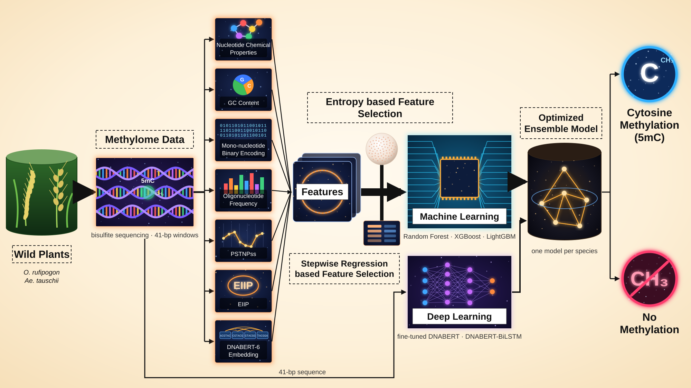

WildEpiPred
An ensemble deep-learning and machine-learning predictor of DNA 5-methylcytosine (5mC) sites in the wild rice Oryza rufipogon and the wild wheat progenitor Aegilops tauschii.
Model pipeline

Background
DNA methylation is a heritable epigenetic mark in which a methyl group is added to the fifth carbon of cytosine (5mC). In plants it occurs in three sequence contexts (CG, CHG and CHH, where H = A, C or T) and regulates transposon silencing, gene expression and genome stability.
Crop wild relatives such as O. rufipogon (the progenitor of cultivated rice) and Ae. tauschii (the D-genome donor of bread wheat) are reservoirs of adaptive variation, but their methylomes are far less studied than those of model species. Bisulfite sequencing is costly, so sequence-based prediction offers a fast first look at likely methylated sites.
About WildEpiPred
WildEpiPred predicts whether a cytosine is methylated (5mC; CG, CHG and CHH treated as one class) from the 41-bp sequence centred on it. A separate model is trained for each species.
Each model is an optimised ensemble of three machine-learning classifiers on selected handcrafted and DNABERT features (selected by mutual information and stepwise regression), a fine-tuned DNABERT-6 transformer and a DNABERT-BiLSTM. Ensemble weights are fitted on a cluster-disjoint validation set.
Positive sites come from whole-genome bisulfite sequencing; training and test sets are separated with CD-HIT-EST at 80% identity.
Instructions for users
- Prepare input. Each sequence must be 41 bp (A, C, G, T) with the cytosine to be scored at position 21, in FASTA or as plain sequence.
- Choose the model: O. rufipogon, Ae. tauschii or both.
- Run prediction. Results show each sequence's context (CG/CHG/CHH), the probability from each model and the ensemble call. Download them as CSV.
Citation
Sinha D, Ghosh S, Sarkar A, Bhattacharjee S, Guha Majumdar S, Murmu S. WildEpiPred: prediction of DNA 5mC sites in the crop wild relatives Oryza rufipogon and Aegilops tauschii. Manuscript in preparation.
5mC prediction
Upload a FASTA file or paste sequences. Each sequence must be 41 bp with the cytosine to be scored at position 21.
Reference model
Resources
Example data, the training and testing datasets, and the command-line version of WildEpiPred.
Example data
Example inputs with their WildEpiPred output: a 600-bp O. rufipogon genomic region (scan mode) and 41-bp test sites for both species (site mode).
Download example data (zip, 95 KB)Training and testing datasets
The four 41-bp datasets (5mC positive and negative for each species), split into training and independent test sets, in FASTA format.
Download datasets (zip, 4.3 MB)Dataset summary
| Species | Class | Training | Test | Source |
|---|---|---|---|---|
| O. rufipogon | 5mC (positive) | 42,578 | 9,868 | Whole-genome bisulfite sequencing (2 samples) |
| O. rufipogon | non-5mC (negative) | 42,578 | 9,868 | CDS windows, C at centre, CHG motif, < 60% identity |
| Ae. tauschii | 5mC (positive) | 34,742 | 8,041 | Bisulfite sequencing (2 samples) |
| Ae. tauschii | non-5mC (negative) | 34,742 | 8,041 | CDS windows, C at centre, CHG motif, < 60% identity |
5mC sites: binomial test p < 0.01, methylation level ≥ 0.5, coverage ≥ 5; CG, CHG and CHH merged. Redundancy removed with CD-HIT-EST (90%); train/test split cluster-disjoint at 80% identity. Negative windows have no methylated read at the centre cytosine in the bisulfite data.
Command-line tool
For genomes or large sequence sets, run WildEpiPred locally (CPU, CUDA or Apple GPU). Source code and models: github.com/diprosinha/WildEpiPred.
git lfs install git clone https://github.com/diprosinha/WildEpiPred.git cd WildEpiPred conda env create -f environment.yml && conda activate wildepipred python wildepipred.py predict --species rufipogon --input my_seqs.fasta --out predictions.csv
Programmatic access
This server also accepts JSON requests:
curl -X POST /predict -H "Content-Type: application/json" \
-d '{"species": "rufipogon", "sequences": ">s1\nGTGTATGATGGGAGGTGGGCCGATTCAGTTTTTTCTACGGG"}'
Developers
WildEpiPred was developed by: